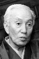

Also known as:座頭市牢破り (original title)
Country:Japan, 96 minutes
Spoken languages:Japanese
Genres:Adventure, Action, Drama
Director(s):Satsuo Yamamoto
Writer(s):Kiyokata Saruwaka, Koji Matsumoto, Takehiro Nakajima
Video Codec:Unknown
Number: 2822


Certification:
Storyline:
When a local gambling house kidnaps some peasants because they failed to pay their debts, a rival gambling house pays their debts and sets them free.
Cast: 

Medium: Bluray,
Comments: Part of: Zatoichi - The Blind Swordsman collection
Loaned: No
Aspect ratio: Unknown